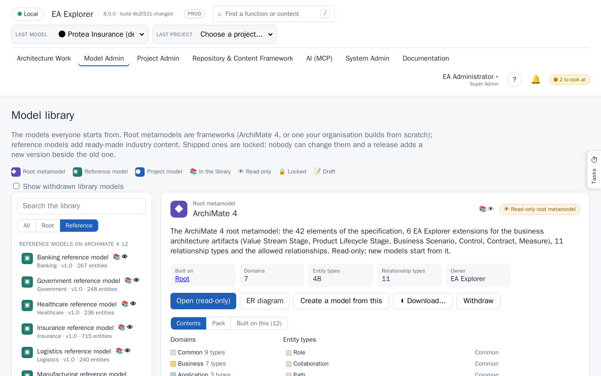

Use an industry pack
For: Industry model makers, Practising architects
Start from an industry's reference model, and download its book, workbook and templates.

#/library?kind=referenceWhy do this
An industry pack holds a reference model's files: the book, the workbook, the metamodel. Looking through it first shows whether it fits before you start a model from it. See Industry models and the library.
Reference models only help if they are sound and kept up to date, so the library has its own review: promote, request, approve, publish, and withdraw when a reference is past its time.
In TOGAF terms: The Enterprise Continuum: moving from generic and industry architectures to your organisation's own, and back as reusable references. See EA Explorer and the TOGAF Standard.
The goal: You see what an industry's reference brings before you use it.
Steps
- Model Admin › Model library › External reference models: Banking, Government, Healthcare, Logistics, Manufacturing, Minerals and Mining, Pharmaceuticals, Retail, Telecommunications, and Meridian Assurance (insurance).
- Open one; its Pack tab has the industry's files as tiles: the book, the workbook, the metamodel Excel it was built from and its empty template, ArchiMate 4 views, Excel templates and PowerPoints. Download any of them.
If something goes wrong
- A tile says not loaded: a Library Admin clicks Load packs from the folder on the server, or runs
eax packs loadon the machine.